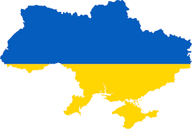

Ukra ine
General Information
Ukraine is a country in Eastern Europe. It is the second-largest country in Europe after Russia, which borders it to the east and northeast. Ukraine also borders Belarus to the north; Poland and Slovakia to the west; Hungary, Romania and Moldova[c] to the southwest; and the Black Sea and the Sea of Azov to the south and southeast. Kyiv is the nation's capital and largest city, followed by Kharkiv, Odesa, and Dnipro. Ukraine's official language is Ukrainian.
History
Early history
Evidence for the earliest securely dated hominin presence in Europe comes from 1.4 million-year-old stone tools from Korolevo, in western Ukraine. Settlement by modern humans in Ukraine and its vicinity dates back to 32,000 BC, with evidence of the Gravettian culture in the Crimean Mountains.
Golden Age of Kyiv
The establishment of the state of Kievan Rus' remains obscure and uncertain. The state included much of present-day Ukraine, Belarus and the western part of European Russia. According to the Primary Chronicle, the Rus' people initially consisted of Varangians from Scandinavia. In 882, the pagan Prince Oleg (Oleh) conquered Kyiv from Askold and Dir and proclaimed it as the new capital of the Rus'.Anti-Normanist historians however argue that the East Slavic tribes along the southern parts of the Dnieper River were already in the process of forming a state independently. The Varangian elite, including the ruling Rurik dynasty, later assimilated into the Slavic population. Kievan Rus' was composed of several principalities ruled by the interrelated Rurikid kniazes ("princes"), who often fought each other for possession of Kyiv
Cossack Hetmanate
Deprived of native protectors among the Ruthenian nobility, the peasants and townspeople began turning for protection to the emerging Zaporozhian Cossacks. In the mid-17th century, a Cossack military quasi-state, the Zaporozhian Host, was formed by Dnieper Cossacks and Ruthenian peasants. Poland exercised little real control over this population, but found the Cossacks to be useful against the Turks and Tatars,and at times the two were allies in military campaigns. However, the continued harsh enserfment of Ruthenian peasantry by Polish szlachta (many of whom were Polonised Ruthenian nobles) and the suppression of the Orthodox Church alienated the Cossacks. The latter did not shy from taking up arms against those they perceived as enemies and occupiers, including the Catholic Church with its local representatives.
19th and early 20th century
The 19th century saw the rise of Ukrainian nationalism. With growing urbanisation and modernisation and a cultural trend toward romantic nationalism, a Ukrainian intelligentsia committed to national rebirth and social justice emerged. The serf-turned-national-poet Taras Shevchenko (1814–1861) and political theorist Mykhailo Drahomanov (1841–1895) led the growing nationalist movement. While conditions for its development in Austrian Galicia under the Habsburgs were relatively lenient, the Russian part faced severe restrictions, going as far as banning virtually all books from being published in Ukrainian in 1876.
Independence
As part of the so-called parade of sovereignties, on 16 July 1990, the newly elected Supreme Soviet of the Ukrainian Soviet Socialist Republic adopted the Declaration of State Sovereignty of Ukraine.
As part of the so-called parade of sovereignties, on 16 July 1990, the newly elected Supreme Soviet of the Ukrainian Soviet Socialist Republic adopted the Declaration of State Sovereignty of Ukraine.
Geography
Ukraine is the second-largest European country, after Russia, and the largest country entirely in Europe. Lying between latitudes 44° and 53° N, and longitudes 22° and 41° E., it is mostly in the East European Plain. Ukraine covers an area of 603,550 square kilometres (233,030 sq mi), with a coastline of 2,782 kilometres (1,729 mi).
Climate
Ukraine is in the mid-latitudes, and generally has a continental climate, except for its southern coasts, which have cold semi-arid and humid subtropical climates. Average annual temperatures range from 5.5–7 °C (41.9–44.6 °F) in the north, to 11–13 °C (51.8–55.4 °F) in the south.[185] Precipitation is highest in the west and north and lowest in the east and southeast.[185] Western Ukraine, particularly in the Carpathian Mountains, receives around 120 centimetres (47.2 in) of precipitation annually, while Crimea and the coastal areas of the Black Sea receive around 40 centimetres (15.7 in)
Biodiversity
Ukraine contains six terrestrial ecoregions: Central European mixed forests, Crimean Submediterranean forest complex, East European forest steppe, Pannonian mixed forests, Carpathian montane conifer forests, and Pontic steppe.[189] There is somewhat more coniferous than deciduous forest.[190] The most densely forested area is Polisia in the northwest, with pine, oak, and birch.[190] There are 45,000 species of animals (mostly invertebrates),[191] with approximately 385 endangered species listed in the Red Data Book of Ukraine.[192] Internationally important wetlands cover over 7,000 square kilometres (2,700 sq mi), with the Danube Delta being important for conservation.
Urban areas
Ukraine has 457 cities, of which 176 are designated as oblast-class, 279 as smaller raion-class cities, and two as special legal status cities. There are also 886 urban-type settlements and 28,552 villages
Culture
Ukrainian customs are heavily influenced by Orthodox Christianity, the dominant religion in the country.[372] Gender roles also tend to be more traditional, and grandparents play a greater role in bringing up children, than in the West.[373] The culture of Ukraine has also been influenced by its eastern and western neighbours, reflected in its architecture, music and art
Literature
Ukrainian literature has origins in Old Church Slavonic writings, which was used as a liturgical and literary language following Christianisation in the 10th and 11th centuries.[387][388][better source needed][g] Other writings from the time include chronicles, the most significant of which was the Primary Chronicle.[citation needed] Literary activity faced a sudden decline after the Mongol invasion of Kievan Rus', before seeing a revival beginning in the 14th century, and was advanced in the 16th century with the invention of the printing press.
Architecture
Ukrainian architecture includes the motifs and styles that are found in structures built in modern Ukraine, and by Ukrainians worldwide. These include initial roots which were established in the state of Kievan Rus'. Following the Christianisation of Kievan Rus', Ukrainian architecture has been influenced by Byzantine architecture. After the Mongol invasion of Kievan Rus', the Galician style continued to develop in the Kingdom of Galicia–Volhynia.
Weaving and embroidery
Artisan textile arts play an important role in Ukrainian culture,[396] especially in Ukrainian wedding traditions. Ukrainian embroidery, weaving and lace-making are used in traditional folk dress and in traditional celebrations. Ukrainian embroidery varies depending on the region of origin[397] and the designs have a long history of motifs, compositions, choice of colours and types of stitches.[398] Use of colour is very important and has roots in Ukrainian folklore. Embroidery motifs found in different parts of Ukraine are preserved in the Rushnyk Museum in Pereiaslav.
Music
Music is a major part of Ukrainian culture, with a long history and many influences. From traditional folk music, to classical and modern rock, Ukraine has produced several internationally recognised musicians including Kirill Karabits, Okean Elzy and Ruslana. Elements from traditional Ukrainian folk music made their way into Western music and even into modern jazz. Ukrainian music sometimes presents a perplexing mix of exotic melismatic singing with chordal harmony. The most striking general characteristic of authentic ethnic Ukrainian folk music is the wide use of minor modes or keys which incorporate augmented second intervals.
Cuisine

Ukrainian cuisine has been formed by the nation's tumultuous history, geography, culture and social customs. Chicken is the most consumed type of protein, accounting for about half of the meat intake. It is followed by pork and beef. Vegetables such as potatoes, cabbages, mushrooms and beetroots are widely consumed.[419] Pickled vegetables are considered a delicacy. Salo, which is cured pork fat, is considered the national delicacy. Widely used herbs include dill, parsley, basil, coriander and chives.